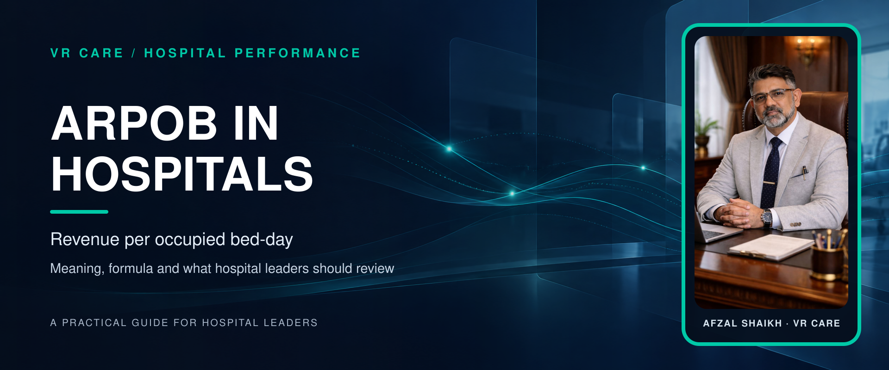
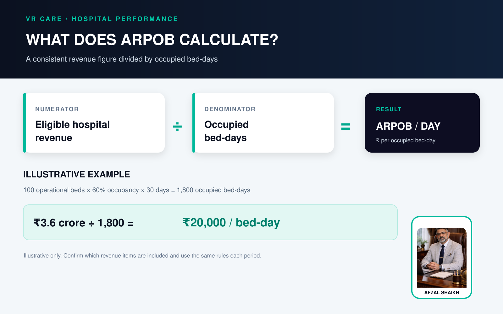
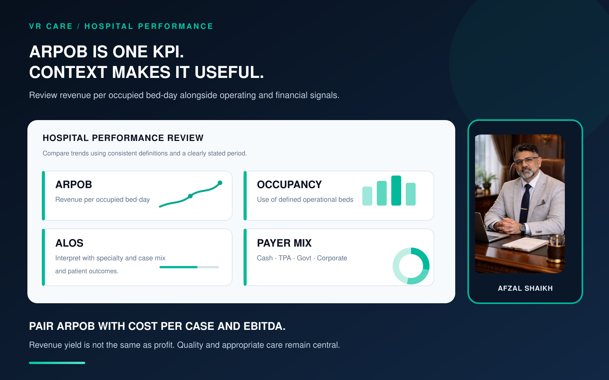

ARPOB in Hospitals: What It Means, How to Calculate It and What It Tells You

ARPOB means Average Revenue Per Occupied Bed. To calculate daily ARPOB, divide the hospital revenue included in your chosen definition by the number of occupied bed-days in the same period.
ARPOB helps hospital leaders understand revenue generated relative to inpatient bed use. It should be reviewed alongside occupancy, length of stay, payer mix, service mix, collections and operating costs. It is a revenue measure, not a profit measure.
What does ARPOB mean in a hospital?
ARPOB is a hospital performance indicator that shows the average revenue associated with each occupied bed for a defined period. It is commonly reported as a per-day figure.
The calculation has two parts:
- Revenue numerator: which hospital revenue the calculation includes
- Bed-day denominator: the occupied bed-days recorded during the same period
The revenue basis can vary. For example, an NSE-hosted company prospectus defines ARPOB using revenue from hospital operations and average occupied beds over the period. Apollo's investor presentation describes its ARPOB as total hospital revenue per patient-day, net of doctor fees. This is why hospitals should document their own calculation before comparing figures.
How to calculate ARPOB
For an operational hospital dashboard, a practical formula is:
Example
Suppose a hospital has:
- 100 operational beds
- Average occupancy of 60% for 30 days
- Eligible inpatient revenue of ₹3.6 crore for the month
Occupied bed-days: 100 × 60% × 30 = 1,800
ARPOB: ₹3.6 crore ÷ 1,800 = ₹20,000 per occupied bed-day
This is an illustrative calculation, not an industry benchmark.
Use actual occupied bed-days from the hospital's census wherever possible. Admissions multiplied by average length of stay can be a rough estimate, but it may differ from the recorded bed-day count because of the hospital's counting rules and the timing of admissions and discharges.

Define the revenue before comparing ARPOB
Before publishing or comparing ARPOB, write down what is included in the revenue figure. For example, decide whether it includes:
- Inpatient room, ICU and procedure revenue
- Diagnostics, pharmacy and consumables
- Doctor fees
- Discounts, refunds and cancellations
- OPD or day-care revenue
- Revenue from services outside the hospital's inpatient operation
Keep the rule consistent across months, departments and facilities. If the hospital changes the definition, show when the change occurred so leaders can interpret the trend correctly.
ARPOB, occupancy and EBITDA are different measures
| Measure | What it helps explain |
|---|---|
| ARPOB | Revenue relative to occupied bed-days |
| Occupancy | How much of the defined bed capacity is occupied |
| ALOS | Average inpatient length of stay |
| EBITDA or operating margin | Operating performance after relevant operating costs |
A hospital can have high occupancy and low ARPOB, or rising ARPOB without improving profitability. Costs, payer deductions, service mix and the revenue definition all affect the interpretation.

How hospital leaders can use ARPOB
Review ARPOB by month, department, specialty, payer and facility, where reliable data is available. Then ask:
- Is the trend based on the same revenue and bed-day definitions?
- Which service lines or payer groups explain the change?
- Are charges for services actually provided documented and captured accurately?
- Are claims, deductions and collections affecting realised revenue?
- Does the change align with occupancy, ALOS, patient experience and quality measures?
- Are costs rising faster than revenue?
A useful hospital dashboard can show ARPOB beside occupancy, ALOS, payer mix, receivables, claims status and cost per case. That gives hospital CEOs and administrators a fuller view than a single number.
Responsible ways to improve ARPOB
The goal should be to improve the hospital's appropriate revenue performance, not to pursue a higher figure at any cost. Leaders can review:
- Charge capture: reconcile clinical records and services delivered with billing records.
- Payer processes: identify recurring documentation gaps, preventable claim deductions and delays.
- Tariff and package controls: keep approved rates and package inclusions clear and consistently applied.
- Service-line performance: understand demand, capacity, payer mix and costs by specialty.
- Patient flow: coordinate admissions, diagnostics, procedures and discharge planning.
- Data quality: assign ownership for census, billing and finance data before comparing trends.
Do not use ARPOB as a reason to encourage unnecessary services, extend a stay without clinical need or pressure staff to prioritise revenue over appropriate care.
Common ARPOB mistakes
- Dividing total monthly collections by licensed beds instead of occupied bed-days
- Including OPD revenue in one month but excluding it in another
- Comparing hospitals that use different revenue definitions
- Treating an increase in ARPOB as proof that profitability improved
- Using admissions × ALOS as if it were the verified bed-day count
- Setting one target for hospitals with different specialties, payer mixes and operating models
The practical takeaway
ARPOB is most useful when its formula is clear, the underlying data is reliable and leaders review it alongside operational and financial measures. It can help identify where revenue performance is changing, but it does not explain the cause by itself.
For a broader view, read VR Care's guides to hospital KPIs and hospital profitability and revenue leakage. Hospitals seeking support with performance systems can also explore VR Care's hospital operations and management services.
Frequently asked questions
What is the full form of ARPOB?
ARPOB stands for Average Revenue Per Occupied Bed.
How do you calculate ARPOB per day?
Divide the eligible hospital revenue for a defined period by the occupied bed-days recorded during that same period.
Is ARPOB the same as revenue per bed?
Not always. ARPOB is usually tied to occupied beds and is often expressed per occupied bed-day. "Revenue per bed" may use a different denominator or time period, so check the formula.
Is a higher ARPOB always better?
No. ARPOB should be interpreted with occupancy, payer mix, case mix, costs, collections and quality measures. A higher figure alone does not establish improved profitability or care quality.
What is a good ARPOB for a hospital in India?
There is no single figure that applies to every hospital. Specialty mix, location, payer mix, hospital size and calculation method can all affect the number. Compare a hospital's own results over time using consistent definitions before comparing it with another facility.
What is the difference between ARPOB and EBITDA?
ARPOB measures revenue relative to occupied bed-days. EBITDA is an operating-profit measure. ARPOB does not subtract operating costs and should not be described as profit per bed.